| IdePix AATSR Cloud Shadow Algorithm |
|
As all calculations of the shadow are translated to the geometry of the pixel grid, it is necessary to calculate the north direction (also called orientation or bearing) for each pixel individually. The orientation for a pixel (i,j) is derived from the neighboring pixel (i, j-1) and (i, j+1) from pixel-geocoded location:
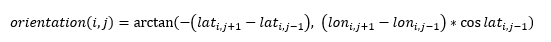
x_tx>0 (VAA*180°), SAA*>180° or x_tx<0
(VAA*<180°),
SAA*<180° (angles are corrected by
orientation), the geometry of the apparent sun zenith angle which causes the shadow position can be described in the
following way:
From
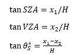
follows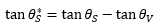
For view and sun direction in opposite directions (x_tx>0 (VAA*>180°), SAA*<180°
or
x_tx<0 (VAA*<180°), SAA*>180°, angles corrected for orientation)
follows accordingly:
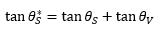
The sun azimuth angles are corrected by the orientation (North direction) at the current cloud pixel, so that they represent the azimuth angle in the projected grid coordinates with 0° in upwards direction on the grid. The view azimuth angle is replaced by the tie point grid x_tx, which gives the distance from the nadir line at the center position of a pixel. It changes its sign from left of nadir x_tx <0 to right of nadir x_tx>0. This is the easiest way to find the viewing direction (without interpolation and corrections), and it allows the algorithm to process subsets of the swath width.
| 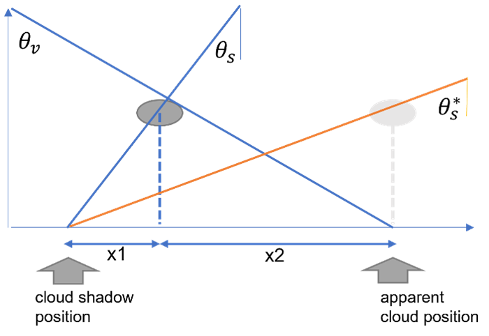 | 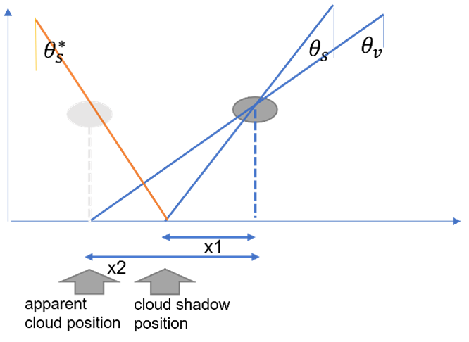 |
| Geometrical correction for apparent sun zenith angle (VAA>180°, SAA<180° or VAA<180°, SAA>180°) | Geometrical correction for apparent sun zenith angle (VAA>180°, SAA>180° or VAA<180°, SAA<180°) |
Starting from a cloud pixel, which is defined by the cloud flag expression, the illumination path is projected on the grid and all pixels up to a maximum distance are identified which are intersected by this path.
With the adjusted sun zenith angle θ*S and the azimuth angles adjusted for North direction, so that they represent the azimuth on the grid against the Y-direction, the geometry of the illumination path on the projection grid can be fully described.
Orientation (North direction) at pixel [i, j] is calculated by the positions at neighboring pixels
p[i, j-1] = (lon1, lat1) and p[i, j+1]= (lon2, lat2).
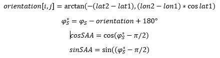
The theoretical maximum length of the projected path in grid coordinates is defined by the range of surface elevation and the adjusted angles in x and y direction (spatial resolution 1km in AATSR products):
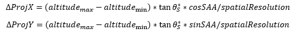
The relative grid coordinates of the start point at the cloud pixel at set to (x0, y0) = (0, 0).
As the spatial resolution of the grid is quite coarse with regard to the expected cloud top heights, which are currently fixed at 6km, the maximum extent of the search path is defined as
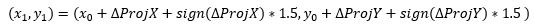
With sign(x) defined as: for x>=0, sign(x)=1; for x<0, sign(x)=-1.
For all integer value combinations between (x0,y0) and (x1,y1), the center position of the
pixel is set to relative grid coordinates + (0.5, 0.5). The distance from each pixel center to the
theoretical line of illumination is calculated. If the distance is smaller than 0.5*√2, the pixel
area is intersected by the line, and the pixel is potentially a shadow pixel.
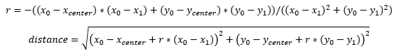
For the intersected pixels (distance < 0.5*√2, relative grid coordinates x, y) the theoretical
height of the illumination path is calculated as:
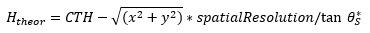
Where the theoretical line intersects the surface defined by its altitude, the shadow can be found. The discreet nature of the grid calls for a height threshold, so that shadow pixels can be identified:
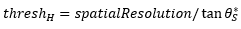
The cloud shadow flag is raised for all the pixels of the path, which are not masked as cloud and the theoretical height intersects with the surface elevation:
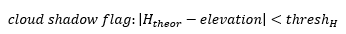
The AATSR Level-1 product does not provide clooud top height information. Therefor this values is predefined to a value of 6000 meter. The processor interface allows to adjust this value for each processed scene.
The cloud shadow calculation is limited to the daytime. As daytime is the part of the orgbit considered where SZA<85° and the confidence_in flag day (bit value 10) is raised.